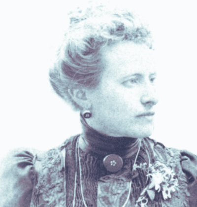
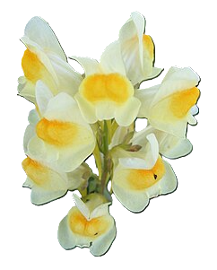

Blanca Catalán

Botánica
Fue la primera mujer española en nombrar una planta. En honor a su contribución, el botánico Heinrich Moritz Willkomm nombró una planta "Linaria blanca", que posteriormente fue renombrada "Linaria repens". Este gesto fue una forma de rendir homenaje a Blanca Catalán de Ocón, quien fue una pionera en la botánica de España.
